第1课时｜45分钟
女装设计 III · 第03周
第03周｜穿着者与时事主题
主题不是凭空想出来的，它来自真实生活中的摩擦。 在当代生活语境中，把人的身体、行动与公共议题转成设计问题。
穿着者证据 → 时事证据 → 设计机会 → 可验证主题
Huishan Zhang · Resort 2027｜第03周穿着者观察系列 同一系列 5套造型
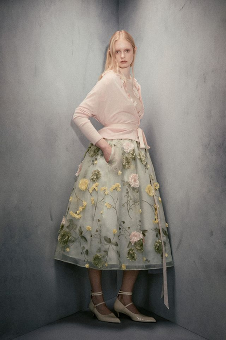
01 体积 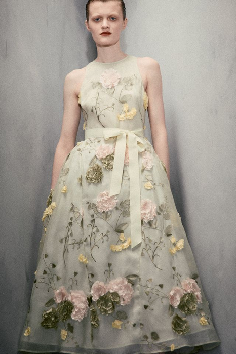
02 透视 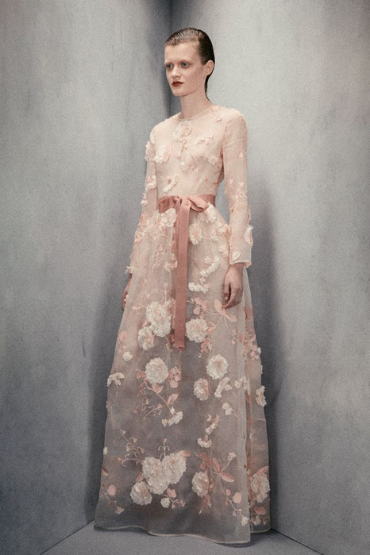
03 长度 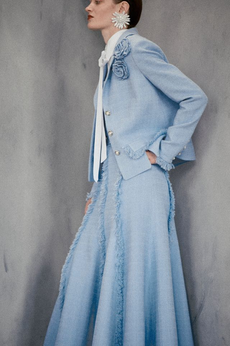
04 动态 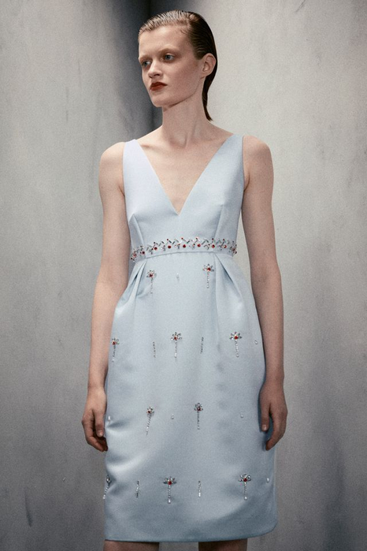
05 框景 图源：Huishan Zhang 2027度假系列｜Vogue Runway｜用途：本页作本周正式场合强度的封面样本
课后查阅｜教学补充
女装设计 III · 第03周
对照组·成衣语境
同一套方法，在成衣语境里长什么样 本周用高级女装 作方法的示范载体——正式场合把身体、时间与仪式压到最紧，问题最容易被看见。但方法本身（穿着者证据 → 身体触点 → 可验证要求）对任何品类都成立。下面五套是同一季的成衣与度假造型：触点还是那六个，只是容差更大。
成衣／度假语境 · 五套对照样本 5套并列观察
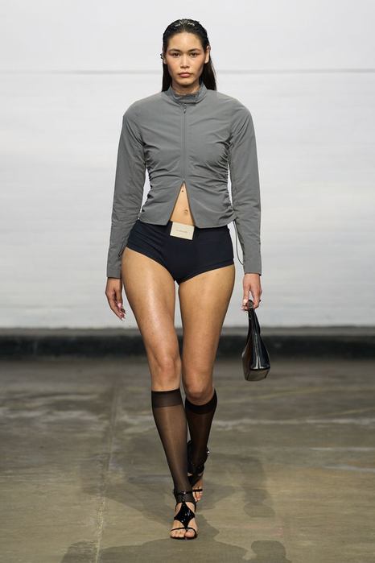
01 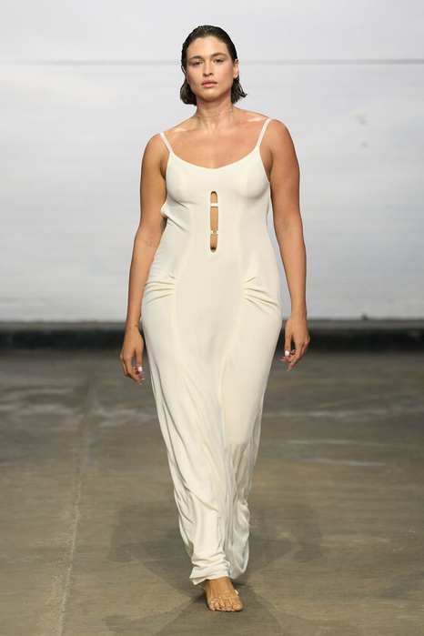
02 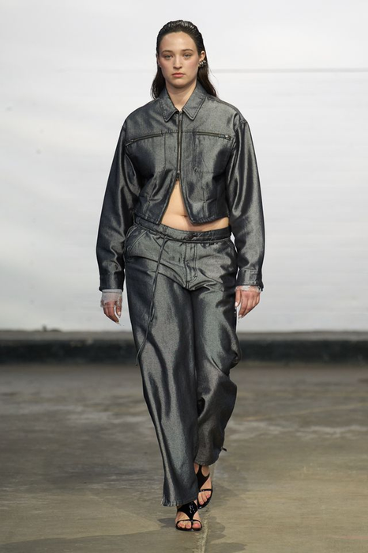
03 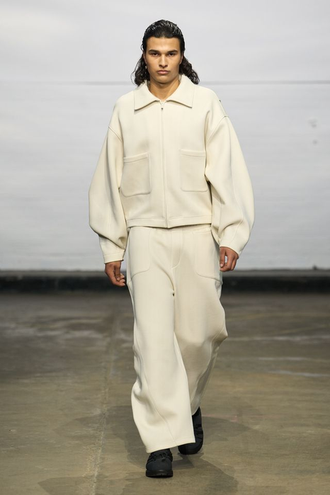
04 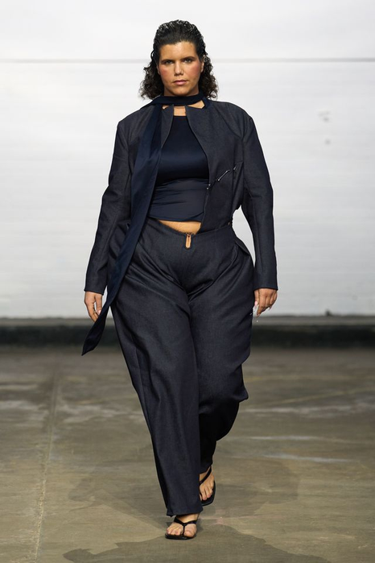
05 图源：课程 2026–2027 秀场资料库｜用途：作为高级女装载体的成衣语境对照组，不单独构成本周作业素材
十六周课程路径 女装设计 III · 第03周｜第1课时 45分钟
十六周不是孤立主题，而是一条连续的设计证据链 前8周建立方法并完成中期验证；后8周深化春夏与秋冬系列，最终独立完成主题系列与答辩。
01–04 判断与定位
05–08 提取与验证
09–12 季节系列开发
13–16 独立项目与考核
第1课时｜45分钟
女装设计 III · 第03周
03 学习目标
今天要把“目标人群”变成可观察的人 本周不是先决定一种“风格”，而是完成从真实穿着者证据到可验证主题的转译。本周以高级女装 作为方法的示范载体 ——正式场合把身体、时间与仪式压到最紧，问题最容易被看见；方法本身（穿着者证据 → 身体触点 → 可验证要求）对任何品类都成立。
用身体范围、动作、时间、环境和维护方式描述穿着者，而不是只写年龄与职业。
检查 能否说明她如何移动、穿多久，以及如何清洗和再次穿着？
输出 1张穿着者画像卡
记录一次真实穿着旅程，把动作、物件、环境和身体感受按顺序留下证据。
检查 事实记录与个人推测是否分开，并标出至少3个摩擦点？
输出 1条动作—问题证据链
从公共资料、新闻、访谈或实地观察中选择至少两类来源进行交叉核查。
检查 每条资料是否注明时间、地点、对象与来源，并能连接真实生活变化？
输出 2条可追溯时事证据
把人的证据与时代证据压缩成服装能够处理和验证的具体设计问题。
检查 命题能否通过结构、材料、穿着动作或维护实验进行验证？
输出 1条可验证设计命题
主题命题公式 谁 + 在什么场景 + 遇到什么身体／生活摩擦 + 服装要验证什么
第1课时｜45分钟
女装设计 III · 第03周
第02周→本周
今天不从零开始——你上周交的四份准备，就是今天的四个原料 第02周回答“这条结构线是什么”；本周回答“它为谁存在”。
1 位穿着者 → 穿着者画像 访谈原句与 3 句原话直接进入画像的“身份与表达”一面；下一页的“去标签”就用它开刀。
1 次旅程 → 动作—问题证据链 上周记录的 4 个时间点与 2 个失效时刻，本周展开成正式场合旅程的五个阶段。
1 条时事资料 → 2 条 可追溯证据 本周加码到 2 条，需再找 1 条。 两条都要能通过“来源记录卡”的三条判准。
1 条失效句＋问句 → 可验证命题 它是第1课时四句话检查的终点，也是要求矩阵第 01 栏的输入。
立场句第三次升级 第01周“我选择______的身体关系”→ 第02周“我用______这条结构线实现它”→ 本周“因为______（一个真实的人）在______（一个具体场合）会______，所以这条线必须______”。 上周的原理卡 B 栏那条结构线，本周要回答“它为谁存在”。
开场 3 分钟 确认 W02 证据页（W03 前置：W02_学号_姓名.pdf ）已交课程群、纸质稿在桌上 → 匿名读 2 份第02周一句话小结并当场点评 → 摊开四份准备，今天全程使用。 三张六格表这样记 ：六个面用来问（画像），六个位用来验（触点），六条用来评（形成性）。
第2课时｜45分钟
女装设计 III · 第03周
22 高级女装研究伦理
量体、试穿、摄影与公开使用必须分别保护尊严和边界 高级女装研究会接触具体身体与私人场合；“同意参加试穿”不等于同意公开姓名、照片、量体数据或上传外部AI工具。补救确认（本周必做） ：上周已经完成的访谈与拍摄，今天补一次逐条确认——用途、保存时间、观看对象与是否公开。未取得“公开使用”许可的材料，本周起只留在受控课堂使用。
分层知情同意 量体／试穿／课堂展示／公开发布
必须 分别说明用途、保存时间、观看对象与是否公开，并取得可记录的明确许可。
禁止 用一次口头同意替代所有后续用途，或临时增加拍摄和公开范围。
数据最小化与匿名 姓名／面部／量体表／身体记录
必须 只记录设计验证所需数据，以编号代替姓名，并限制原始文件访问。
禁止 传播完整量体表、可识别面部或与设计问题无关的身体信息。
试穿安全与身体尊严 更衣／触碰／压力／疲劳／评价语言
必须 先询问触碰许可，提供私密更衣条件；出现疼痛、眩晕或压迫时立即停止。
禁止 评价身体“标准／不标准”，或为了照片和造型效果要求继续忍受不适。
公开、AI与撤回权 作品集／社交媒体／公开网页／AI工具
必须 公开前再次确认范围；允许撤回照片或陈述，并能找到和删除对应文件。
禁止 未经单独许可把真实试穿图、身体数据或客户信息上传外部平台与AI系统。
公开边界 未取得“公开使用”单独许可的资料，只能留在受控课堂研究中，不得进入社交媒体、公开作品集、GitHub Pages或外部AI工具。
第1课时｜45分钟
女装设计 III · 第03周
04 去标签
“高端女性”仍然不能指导高级女装设计 身份和审美词只能提供背景；正式场合中的时间、动作、身体与着装协助才会导出结构。
抽象标签｜无法验证 成功、自信、优雅、有东方气质 喜欢高级感、艺术与独特表达 经常参加重要活动 需要有存在感的礼服 可观察条件｜能够设计 开幕活动连续90分钟，需要站立、楼梯移动与转身 致辞和近景摄影中，肩颈框景必须保持完整 晚宴落座时，腰部支撑与裙摆不能形成压迫或卷入鞋跟 服装需要协助穿脱、专业运输、修复与长期保存 2分钟微练 把你上周访谈里最像标签的一句话抄下来，改写成一条可观察条件——必须包含时长、动作、身体部位 三个要素。改不出来的，说明访谈还缺一次追问。
课后查阅｜教学补充
女装设计 III · 第03周
穿着者画像·六个提问面
高级女装的穿着者画像必须进入身体、场合与着装仪式 这六面用来问，不用来打分。画像不是描述“她看起来像谁”，而是记录高级女装如何在具体身体、正式场合与长期保存条件中成立。
身体比例 肩宽、胸腰臀分布与姿态如何影响合体、支撑和体积？
证据 本周 访谈自述比例＋两张站姿照片 后续 量体数据＋高级定制坯样试穿
姿态与动作 站立、行走、落座、转身与登台时，轮廓是否保持完整？
证据 本周 一次行走／落座的手机录像 后续 多角度动态试穿记录
时间与仪式 服装在迎宾、正式陈述、晚宴与摄影等阶段承担什么角色？
证据 本周 公开资料上的场合流程表＋时间轴 后续 真实着装时间记录
空间与光线 画廊、秀场、酒店宴会与夜间灯光如何改变材料和体量的可见性？
证据 本周 场地照片或公开报道图 后续 现场光线测量
护理与保存 刺绣、立体装饰、丝绸与内支撑如何专业清洁、修复、运输和长期保存？
证据 本周 材料类别与洗护标签调研 后续 专业护理方案
身份与表达 穿着者希望建立怎样的权威、距离、仪式感与审美立场？
证据 本周 访谈原句（已有） 后续 场合规范文件
示例画像 经常参加艺术展览开幕、品牌发布与正式晚宴，需要服装在站立、行走与落座时保持轮廓完整，并接受专业清洁、修复与长期保存的女性。
第1课时｜45分钟
女装设计 III · 第03周
06 实拍观察
用真实高级女装图像提出身体与结构问题 图像用于发现比例、支撑、动态、层次与材料问题；最终结论仍由内结构记录和真实试穿证明。
胸腰支撑 Ashi Studio 2026秋冬（巴黎高定周日程）：外扩髋部与贴体胸腰之间需要怎样的内部支撑？
继续查证：内衣层／鱼骨／重量锚点
姿态与动态 Iris van Herpen 2026秋冬高定：轻质层片在行走、转身时如何避开腿部路径？
继续查证：步幅／回弹／边缘安全
场合与层次 Valentino 2027度假：披挂、拖尾与室内空间如何共同改变造型强度？
继续查证：穿脱协助／移动路径／落座
材料与身体距离 Schiaparelli 2026秋冬高定：立体表面与透明层如何控制重量、触感和观看距离？
继续查证：材料样／内层／压力点
照片只能建立结构假设，不能冒充真实合体、材料成分或内部工艺证据。
图源：Ashi Studio 2026秋冬（巴黎高定周日程）、Iris van Herpen 2026秋冬高定、Valentino 2027度假、Schiaparelli 2026秋冬高定｜Vogue Runway｜用途：仅用于课堂身体与结构提问，不作合体或工艺结论。品类称谓以品牌官方与公会名录为准，本课件不作资格判断
第1课时｜45分钟
女装设计 III · 第03周
07 正式场合旅程
把一次高级女装穿着拆成连续仪式 高级女装不是静态正面图；每一阶段都会暴露新的身体触点、协助需求和保存责任。
01
着装与调整 穿脱顺序、协助人数、开合位置、内结构压力。
02
到场与移动 上下车、楼梯、步幅、拖尾与随身物管理。
03
致辞与拍摄 肩颈框景、转身、灯光、远近景比例与细节可读性。
04
晚宴与落座 腰部支撑、裙摆路径、触感、温度与长时间稳定。
05
离场与保存 脱卸、包装、运输、专业清洁、修复和再次穿着。
旅程输出：在每个阶段标出“动作—身体变化—服装失效—需要验证的结构”。
第1课时｜45分钟
女装设计 III · 第03周
08 设计师案例
Huishan Zhang 2027度假：五套正式场合强度样本 同一系列中比较贴体、层次、裙摆、肩颈框景与材料表面；这是观察样本，不是假定同一穿着者的完整旅程。
Huishan Zhang · Resort 2027 课程Runway资料库｜5套实拍造型
01 体积 02 透视 03 长度 04 动态 05 框景
迎宾 轮廓是否能在远景中被识别？
移动 裙摆与层次是否避开步幅？
致辞 肩颈与上身是否稳定？
落座 腰臀与下摆如何重新分配？
摄影 近景材料是否保留细节？
图源：Huishan Zhang 2027度假系列｜Vogue Runway｜用途：仅用于正式场合强度的五套并列观察
课后查阅｜教学补充
女装设计 III · 第03周
09 高级女装研究来源
高级女装的主题研究必须建立“来源等级” 秀场图片只能提出线索；正式场合、穿着者身体、材料工艺与当代文化必须由不同来源交叉验证。
正式场合观察 观察艺术展览开幕、品牌发布、颁奖、晚宴与舞台等场合中的空间、光线、礼仪、动作和观看距离。
证据 场合流程＋观察照片
穿着者与造型团队 访谈穿着者、造型师与着装协助人员，并把身份表达、身体比例、姿态和穿脱过程分别记录。
证据 访谈原句＋量体／试穿
官方秀场与品牌档案 优先使用品牌官方系列说明、完整造型、后台细节与设计师访谈，避免只凭单张二手图片判断。
证据 年份／季节／造型编号
工艺与材料证据 从高级成衣工坊、面料企业、专业展会和实物样本中验证结构、重量、支撑、手工节点与保存条件。
证据 样布＋工艺节点＋测试记录
文化与机构资料 结合博物馆藏品、策展文本、服装史档案、非遗工艺调研与权威行业资料理解当代转译边界。
证据 机构／资料名／日期
最低证据标准 至少 2 类可追溯来源 ＋ 1 次真实坯样、材料或动作验证；社交平台只能作为线索，不能单独构成结论。（本条已提进课堂的“来源记录卡”页，此处保留备查）
第1课时｜45分钟
女装设计 III · 第03周
10 来源记录卡
一张合格来源卡必须让别人重新找到原始资料 “网上看到”“小红书截图”“某品牌图片”都不能构成研究证据；先记录来源，再摘取事实。
发布机构／作者 机构全名、采访对象或原始发布者
资料标题 完整标题，不用自己改写的关键词代替
日期与地点 发布日期、活动日期、观察地点
原始链接／编号 URL、展览名、造型编号或档案编号
事实摘录 只摘取能被再次核对的流程、时间、动作、材料或数据；把个人解释另列。
使用边界 这条资料能证明什么？不能证明什么？还需要哪一种穿着者、材料或坯样证据？
可追溯 同学能在2分钟内找到原始页面、档案或实物记录。
可交叉 至少再用一种不同类型来源核对，不用五张转载图互相证明。
可转译 资料能够连接具体穿着者、正式场合、身体动作或材料原理。
课堂规则 最低证据标准：至少 2 类可追溯来源 ＋ 1 次真实坯样、材料或动作验证；社交平台只能作为线索，不能单独构成结论。进入主题板前必须回到品牌、机构、采访、实物或现场记录。
课后查阅｜教学补充
女装设计 III · 第03周
11 高级女装的场景条件
从当代场合与工艺系统寻找高级女装主题 本土语境不是把传统纹样贴在服装表面，而是重新理解当代仪式、身体、工艺、材料价值与影像传播。
当代正式场合 研究艺术展览开幕、文化活动、品牌发布、颁奖、舞台与正式晚宴中的礼仪流程、观看距离和造型强度。
设计触点 轮廓／层次／落座／灯光
身体与高级合体 从真实穿着者的肩宽、胸腰臀分布、姿态与动作建立合体依据，避免用单一“东方体型”概括所有人。
设计触点 肩点／省道／支撑／平衡
传统工艺的结构转译 研究苏绣、缂丝、香云纱、编结等工艺的材料原理与制作逻辑，再转成接缝、体量、表面和连接方式。
设计触点 结构而非符号复制
低影响的当代奢华 把可追溯材料、少量精制、可拆结构、专业修复与长期保存纳入高级女装价值，而不是只谈“环保风格”。
设计触点 材料溯源／拆装／修复
数字影像与跨文化观看 检验造型在直播、近景摄影、移动镜头与国际传播中的比例、细节和文化可读性，避免只为静态正面图设计。
设计触点 远景／近景／动态／语境
主题生成公式 当代情境＋具体穿着者＋正式场合＋工艺／材料原理＋可通过高级定制坯样验证的结构问题。
课后查阅｜教学补充
女装设计 III · 第03周
传统工艺·四种结构原理
把工艺当结构读：四种原理，四条可转译的服装决定 不看纹样好不好看，只看它靠什么成立 ，以及那条原理能变成服装上的哪一个动作。不是把纹样贴在表面。
苏绣｜盘金（蟠金） 原理 ：金线不穿透地组织，盘在表面再用细线钉缝固定 ；轮廓是一条被压住的凸起线，地布强度不受损。
转译：不破坏面料的表面结构线 ——用明线、嵌条或包边定义分割。
缂丝｜通经断纬 原理 ：经线通贯，每块颜色各用各自的纬线、在色界折回 ，交界留细缝。图案边界即织造边界。
转译：色块边界＝结构边界 ——配色分割落在拼接线上，不让印花跨过接缝。
香云纱｜薯莨染整 原理 ：薯莨浸染、河泥“过乌”、草地日晒，只在一面 形成涂层；两面手感与重量不同 ，正反不可互换。
转译：面料有正反，裁片就有方向 ——哪面朝外、折边怎么翻，材料先定。
编结｜盘长结 原理 ：一根连续的绳 ，不裁断、不缝合，靠固定的上下压叠路径与摩擦自锁；可解可复原。
转译：可逆的连接与开合 ——替代拉链或纽扣时要能说出解结顺序与受力方向。
图源与许可：苏绣 — 《刺绣蟠金箭衣》清，摄影 白色瑰宝，CC BY-SA 4.0（Wikimedia Commons）；缂丝 — 方补，明末至清初，The Metropolitan Museum of Art，CC0；香云纱 — 《香云纱晒纱地》2023-02-25，摄影 方人也，CC BY 2.5；编结 — 《盘长结三维结构》2020，作者 杨雨心，CC BY-SA 4.0｜用途：均为允许再使用的公开许可素材，用于课堂工艺原理观察；完整文件页与许可条款见 w03_craft_assets/CREDITS.json
课后查阅｜教学补充
女装设计 III · 第03周
12 调研地图
调研地图：把分散证据组织成高级女装主题 不要先决定“风格”；先让穿着者、正式场合、时代语境、材料工艺与坯样验证在同一张图中发生关系。
从资料到命题的三个动作 01 分类 标出每条资料的来源、时间、对象和场景，并分别归入五个证据区域。
02 交叉 寻找至少两类来源中反复出现的身体、礼仪、材料或文化矛盾。
03 转译 把矛盾转成可通过结构、材料、动态或高级定制坯样检验的问题。
本页输出 1张调研地图＋1条可验证的高级女装主题命题
第1课时｜45分钟
女装设计 III · 第03周
13 第1课时检查
10分钟书写＋2分钟教师反馈：把一条当代场合证据写成四句话 这四句话不是单独的作业——它就是下午问题板的“人物＋时事”两栏，写好了直接抄过去。四句必须描述同一件事，后一项继承前一项的证据。
02分钟
事实句：资料显示什么 只陈述可追溯的时间、流程或变化，不加入个人评价。
课堂示例 某艺术机构公开流程列出“迎宾—参观—致辞—合影”，嘉宾需连续活动约90分钟。
02分钟
人物句：谁在何处受到影响 说明具体身份、场合任务与所处空间，不写笼统的“都市女性”。
课堂示例 需要公开发言并多次接受近景拍摄的女性策展人，在室内外展区持续移动。
02分钟
身体句：动作与服装如何变化 记录可以观察的姿态、重心、压力、位移或触感。
课堂示例 行走与转身时肩部披挂向后偏移；落座时长裙下摆容易被鞋跟卷入。
02分钟
问题句：服装要验证什么 把身体问题转成能够通过结构、材料或动态试穿回答的问题。
课堂示例 可拆肩部罩层能否在行走时保持平衡，并在落座前30秒内完成收束？
判断标准 四句能否连成“事实 → 人物 → 身体变化 → 结构验证”？禁止使用“关注、赋能、表达”等无法检验的空词。
第2课时｜45分钟
女装设计 III · 第03周
第2课时｜45分钟
从社会证据进入高级女装结构 第二课时只完成一条闭环：身体触点 → 服装要求 → 高级定制坯样验证。
16分钟 触点、要求与示范
15分钟 问题板实操
10分钟 同伴讲评与就地修正
04分钟 评价与收尾
第2课时｜45分钟
女装设计 III · 第03周
身体触点·六个验证位
高级女装通过六个结构触点重新组织身体 这里讨论的不是一般功能配置，而是检查支撑、平衡、重量、活动与内层接触如何在高级定制坯样中成立。六个触点在成衣上同样存在，只是容差更大；这里用高级女装把它们放大。
头颈边界 领口高度、颈部开口、肩线上缘与头部比例共同决定面部框景、距离感和压迫程度。
检验 转头／低头／近景与远景
肩部支撑 肩点、垫肩、袖窿与悬挂体量决定上半身轮廓，并承担披挂、罩层和装饰重量。
检验 抬臂／转身／重量分配
胸腰内部结构 胸省、胸杯、鱼骨、腰封与内衣层需要同时处理塑形、呼吸、坐姿和长时间穿着。
检验 呼吸／落座／支撑稳定
背部与开合 肩胛活动、后领深度、拉链或暗扣位置关系到背面完整度、动作范围和着装协助流程。
检验 转体／穿脱顺序／背面平衡
臀腿与下摆 臀部松量、开衩、裙撑、拖尾与下摆重量必须在站立、行走、台阶和落座中维持比例。
检验 步行／台阶／落座／回身
皮肤与内层 里料、贴边、缝份、鱼骨端部和硬质装饰需要避免摩擦，并控制透视、触感与热量。
检验 压力点／摩擦／20分钟试穿
高级定制坯样验证链 量体与比例记录 → 静态合体 → 动态试穿 → 材料接触 → 正式场合动作 → 结构修正
第2课时｜45分钟
女装设计 III · 第03周
16 实拍触点案例
四张实拍图先定位触点，再提出需要验证的问题 不猜测内部结构；只写图像中可见的身体边界，并明确下一步需要的坯样或材料证据。
头颈边界 Iris van Herpen：面部框景、头部体量与视线之间形成强烈比例。
验证：转头／低头／视野／重量
胸腰内部结构 Schiaparelli：胸部立体表面与收束腰线形成明确身体边界，但内部做法仍需查证。
验证：胸围余量／腰部支撑／呼吸／落座
肩部支撑 Armani Privé：强化肩线与收腰夹克改变上半身距离感，并限制袖窿与抬臂关系。
验证：肩点／垫肩／袖窿／抬臂
臀腿与下摆 Ashi Studio（2026秋冬·巴黎高定周日程）：窄膝位与向下扩张的裙摆会直接影响步幅、屈膝和台阶移动。
验证：步幅／屈膝／台阶／下摆位移
课堂句式：我在图像中看到 ______；这提示 ______ 触点可能发生问题；需要用 ______ 继续验证。
两个触点本页没有图 背部与开合、皮肤与内层——它们在秀场正面照里本来就看不见 ，这正是它们必须靠坯样试穿而不是图片来验证的原因。你的问题板若涉及这两个触点，必须写明用什么试穿动作验证。
图源：Iris van Herpen、Schiaparelli、Armani Privé 2026秋冬高定；Ashi Studio 2026秋冬（巴黎高定周日程）｜Vogue Runway｜用途：仅用于身体触点定位，不推断内部结构
第2课时｜45分钟
女装设计 III · 第03周
17 高级女装要求矩阵
把场合与穿着者证据转换成可验证的高级女装要求 要求不能只是“优雅、创新、舒适”；每一条都必须指出证据来源、身体反应、结构动作与检验方法。
01 / EVIDENCE
正式场合证据 课堂案例 艺术展览开幕流程包含迎宾、楼梯移动、致辞、近景合影与落座，连续活动约90分钟。
02 / RESPONSE
身体与结构反应 观察结果 行走转身时肩部披挂后移；上下台阶时下摆接近鞋跟；落座后腰部支撑压力增加。
03 / REQUIREMENT
高级女装要求 结构动作 肩部罩层设置双锚点；下摆避开鞋跟运动路径；腰部支撑在落座时不发生顶压。
04 / VALIDATION
高级定制坯样验证 动作测试 连续行走与转身10次、上下台阶3轮、落座20分钟，并记录位移和压力点。
追溯规则 一条服装要求必须同时指回1项场合证据、1个身体反应和1种验证方法；无法追溯的要求应删除。本页与下一页的“完成例”是同一个展览开幕案例的两种粒度：矩阵定义 → 完成板示范。
课后查阅｜教学补充
女装设计 III · 第03周
18 完整转译案例
同一条证据必须连续走到高级定制坯样验证 以下课堂案例以艺术机构公开活动流程为起点；它示范推理格式，不冒充某位真实穿着者的合体结论。
01
场合事实 迎宾、参观、致辞、合影和晚宴连续发生；穿着者需要楼梯移动、站立、转身与落座。
02
身体摩擦 肩部披挂在行走时后移；长下摆靠近鞋跟；落座后腰部内层可能形成持续压力。
03
服装要求 设置双肩锚点、可收束下摆与可微调腰部内层；保持远景轮廓和近景肩颈完整。
04
验证方法 行走转身10次、台阶3轮、落座20分钟；30秒内完成罩层调整并记录位移与压力点。
可验证主题：如何让正式活动中的可拆肩部罩层在移动时保持平衡，并在落座前快速收束，同时不破坏肩颈框景？
课后查阅｜教学补充
女装设计 III · 第03周
19 课题交付边界
先说明面向哪一种高级交付，再决定证据深度 本课程讨论高级女装设计方法；不同交付方式需要不同的尺码范围、试穿轮次、工艺责任与保存方案。
小批量高级成衣 小批量高级成衣
对象 受控尺码范围与明确高端客群
验证 基础样衣＋代表性体型试穿
结构 复杂但必须稳定复现
交付 编号、护理与专业改衣触点
半定制 MADE-TO-MEASURE
对象 既有版型回应个人比例与场合
验证 量体＋1至2次关键部位试穿
结构 衣长、肩腰与局部材料可调
交付 个人尺寸档案与穿着说明
全定制 BESPOKE / CUSTOM
对象 一位具体穿着者与正式场合
验证 个人坯样＋多轮静态动态试穿
结构 专属内结构与精细内部完成
交付 着装、运输、修复与保存方案
高级定制／展示研究 高级定制／秀场作品
对象 秀场作品与高级定制坯样研究（非商业交付）
验证 镜头、灯光与动作安全测试
结构 手工节点与个体化方法
交付 写作“高级女装研究”，不虚称官方高定
术语规则 Bespoke描述个人全定制关系；Haute Couture不是它的英文同义词。两者必须分别记录。
第2课时｜45分钟
女装设计 III · 第03周
20 定位案例
Markarian 2027度假：同一正式女装系列也要区分产品角色 不按“贵或便宜”判断；比较五套造型在迎宾、致辞、晚宴、摄影和收藏展示中的比例与维护责任。
Markarian · Resort 2027 课程Runway资料库｜5套实拍造型
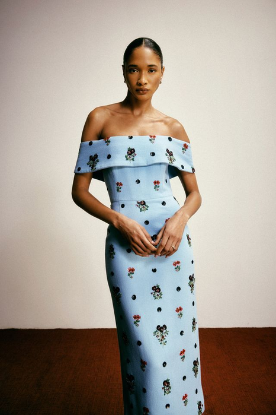
01 迎宾 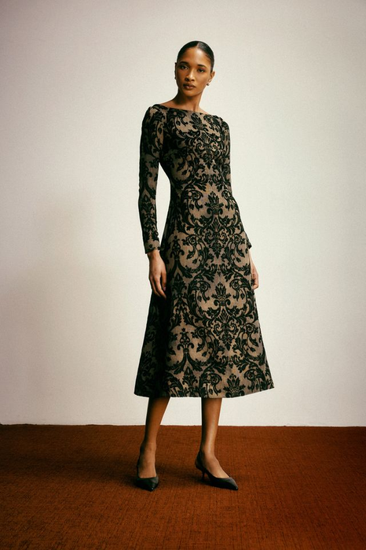
02 致辞 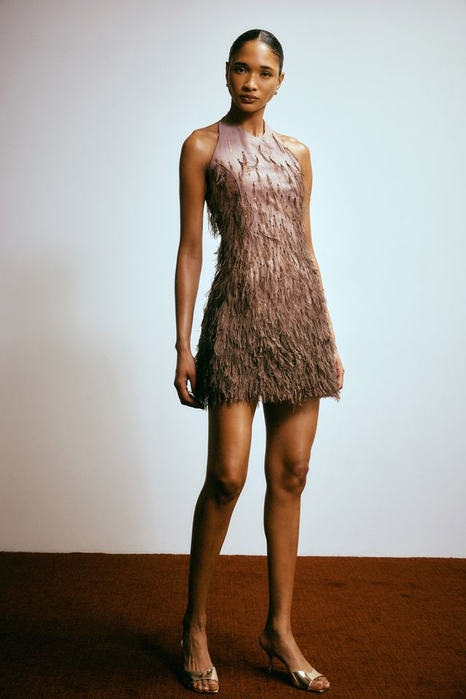
03 晚宴 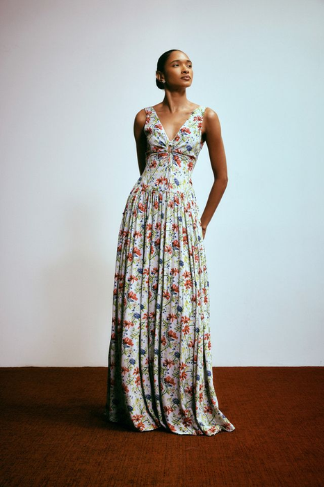
04 摄影 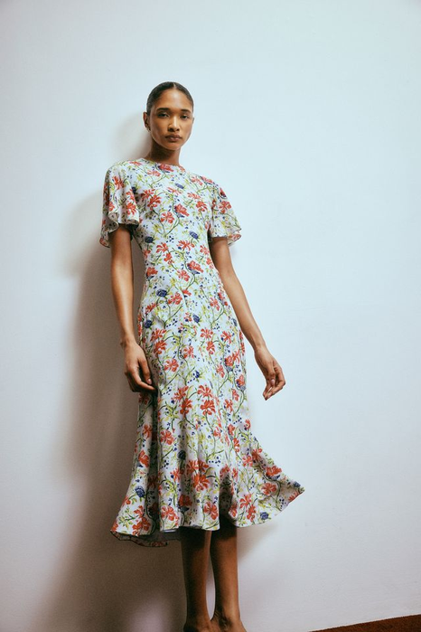
05 展示 课堂判断： 选一套，写出目标穿着者、正式场合、穿着频率与维护方式。
证据边界： 产品角色是课堂分析假设，必须再用品牌资料、访谈或真实场合观察核对。
证据边界 图像能写可见轮廓、层次、表面、开合与身体距离；材料溯源、认证与可修复性必须另查单品资料，没有单品证据时标注“待查证”。
图源：Markarian 2027度假系列｜Vogue Runway｜用途：仅用于同一系列内产品角色的课堂分析假设
课后查阅｜教学补充
女装设计 III · 第03周
21 材料责任证据
Stella McCartney 2027度假：造型观察与责任结论必须分开 秀场图可以观察松量、开合和层次；“可持续”必须由具体产品的材料成分、来源、认证与生命周期资料证明。
Stella McCartney · Resort 2027 5套并列观察｜图像不等于材料证明
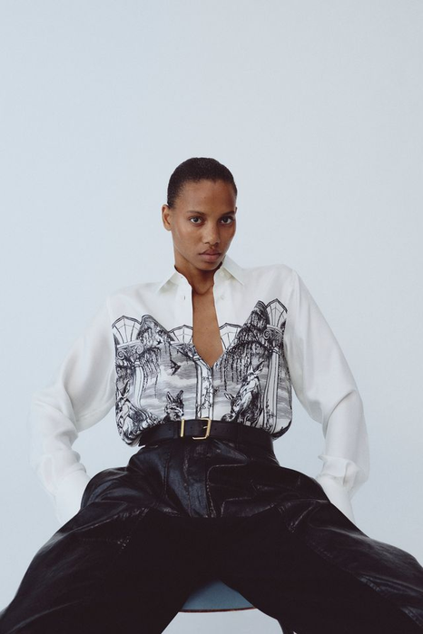
01 松量 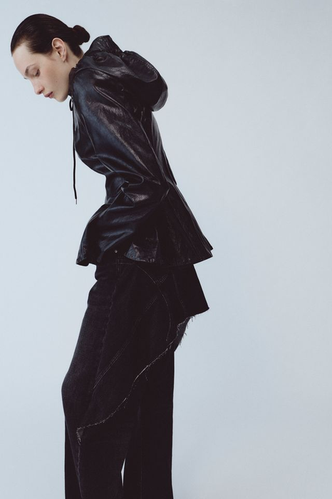
02 开合 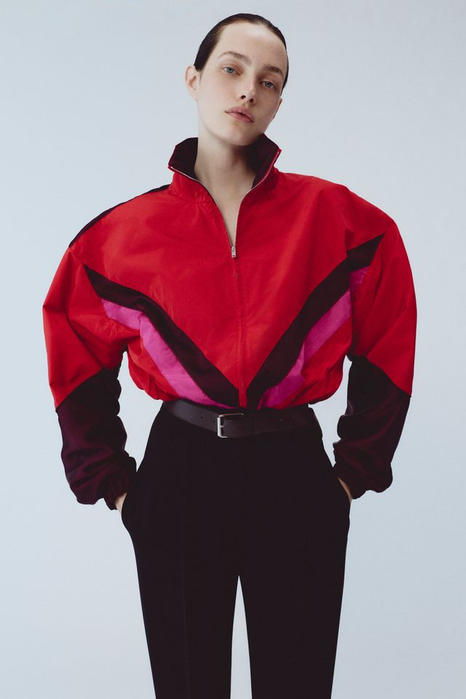
03 层次 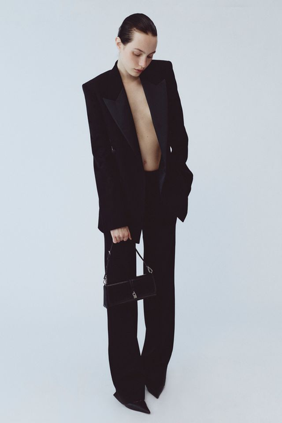
04 表面 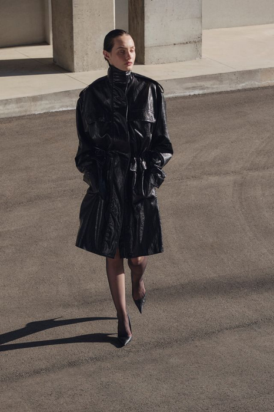
05 动态 图像能写： 可见轮廓、层次、表面、开合与身体距离。
必须另查： 产品材料溯源、认证、可修复性与品牌官方说明；没有单品证据时标注“待查证”。
图源：Stella McCartney 2027度假系列｜Vogue Runway｜用途：仅用于造型观察；材料责任结论须另查单品资料
第2课时｜45分钟
女装设计 III · 第03周
24 完成例
问题板不是情绪拼贴，而是一条可追溯推理链 同一个展览开幕案例走到最后一步——这就是你下午要交的问题板长相。课堂完成例：需要在艺术机构开幕、致辞与晚宴之间连续活动的女性策展人。
人物
访谈与动作 “我最担心楼梯和落座，不希望工作人员一直整理裙摆。”需要独立移动并接受近景拍摄。
时事
场合事实 公开流程包含迎宾、参观、致辞、合影和晚宴；资料记录机构、日期、链接与活动时长。
触点
肩部＋下摆 披挂后移、肩颈框景变化；长下摆靠近鞋跟，落座前需要快速收束。
要求
结构与验证 双锚点罩层、可收束下摆；行走转身10次、台阶3轮、落座20分钟并记录位移。
设计问句：可拆肩部罩层能否在连续移动中保持平衡，并让穿着者在30秒内独立完成下摆收束？
第2课时｜45分钟
女装设计 III · 第03周
23 课堂实操
15分钟：完成一张“人—时事—高级女装”问题板 只做一条可追溯闭环，不同时处理多个穿着者、多个新闻和多个解决方案。
04分钟
锁定穿着者与场合 使用访谈原句、动作时间轴与正式场合流程。
04分钟
标注时事与来源 写机构、日期、原始链接和一条可核对事实。
04分钟
定位身体触点 只圈出一个主要触点和一个次要触点。
03分钟
写出三条要求 每条包含结构动作、验证方法和不可牺牲条件。
输出必须回答：为谁／在哪个正式场合／发生什么摩擦／服装改变什么／如何用高级定制坯样验证。本周动作 ：在问题板右上角写一行“交付方式：______”，第04周的设计任务书直接继承。
课后查阅｜教学补充
女装设计 III · 第03周
25 图像证据讲评
用四类实拍图像检查设计推理是否完整 秀场与系列图像可以支持场景、比例、动态和材料观察；穿着者需求与合体结论仍必须来自真实访谈和坯样试穿。
来源与场景 Valentino 2027度假系列：真实空间、移动路径与拖尾之间的关系。
讲评：是否注明品牌、系列、年份与图像来源？
人物与比例 Fforme 2027度假系列：贴体上身、腰线与裙摆体量的比例观察。
讲评：是否把秀场模特图与真实目标穿着者证据区分开？
身体与动态 Sacai 2027度假系列：行走时层次、开口、裤腿与下摆轨迹。
讲评：问题是否发生在具体动作、部位和时间内？
材料与结构 Fforme 2027度假系列：材料表面、边缘处理与贴体结构的关系。
讲评：是否用材料样和坯样继续验证，而不是只凭图片推断？
实拍资料边界 图像来自课程2027季Runway资料库；系列信息必须随图记录。秀场图只能支持造型、材料与动态观察，不能替代穿着者访谈和真实合体测试。
图源：Valentino、Fforme、Sacai 2027度假系列｜Vogue Runway｜用途：仅用于四类图像证据的完整性检查
第2课时｜45分钟
女装设计 III · 第03周
同伴讲评与就地修正
10分钟：同伴讲评与就地修正 同伴不是替你设计，而是指出证据断点和无法验证的空词；指完就地改。
04分钟
同伴按四问检查 来源（原始机构／日期／链接）→ 穿着者（人物／场合／动作／时间）→ 转译（是否进入身体触点）→ 验证（坯样动作／时间／判断标准）。
04分钟
本人就地修正 删掉“关注、赋能、高级感、东方气质”等无法检验的词；为最弱的一条补来源或访谈原句；把形容词改成结构动作与测试方法。
02分钟
圈重点 只保留一个核心矛盾和三条可验证要求。
反馈格式：“这条证据支持 ______；但 ______ 仍是推测；下一步需要补 ______。” 修正后检查 ：每一条要求能否同时指回“来源＋身体反应＋验证方法”？
课后查阅｜教学补充
女装设计 III · 第03周
证据修正·课后自查表
课后自查：删掉空词，把断点补成可执行条件 修改的目标不是让版面更漂亮，而是让第04周能够直接把证据压缩成主题板与设计任务书。
02分钟
删除 删掉“关注、赋能、高级感、东方气质”等无法检验的词。
02分钟
补证 为最弱的一条判断补来源、访谈原句或动作记录。
02分钟
改要求 把形容词改成结构动作、材料条件和测试方法。
01分钟
圈重点 只保留一个核心矛盾和三个可验证要求。
修正后检查：每一条要求能否同时指回“来源＋身体反应＋验证方法”？
课后查阅｜教学补充
女装设计 III · 第03周
期末评价·六项（学期通用）
本周成果将进入同一套六项终期评价 平时训练不是零散作业，而是期末系列的证据积累；本页依据《25级〈女装设计〉考核大纲》期末实践考试评分标准（满分100分）。
10分
时代性与创意 主题回应当下，并形成自己的问题与立场。
10分
趋势性与元素 提炼的设计元素与当季趋势、审美和来源一致。
20分
当代女性适配 款式回应身体、动作、场景与真实穿着需求。
20分
整体造型美感 比例、色彩、材料与细节共同形成完整造型。
20分
市场与定位 顾客、价格、品类和使用情境边界清楚。
20分
统一与丰富 风格统一，同时具有角色、搭配与造型变化。
第2课时｜45分钟
女装设计 III · 第03周
本周形成性检查·六条
第03周检查：主题是否具有时代性、独特性与准确定位 六项均需在问题板上找到证据；不能只靠口头解释补足。
✓
具体性 5分 人物、正式场合、时间和动作明确。→ 期末｜当代女性适配 20分
✓
时代性 5分 时事来源可靠并连接当代生活。→ 期末｜时代性与创意 10分
✓
独特性 5分 问题来自特定矛盾，不是通用风格词。→ 期末｜时代性与创意 10分
✓
定位准确 5分 客群、交付方式、场合与维护责任一致。→ 期末｜市场与定位 20分
✓
可转译 5分 社会问题已进入结构、材料和验证条件。→ 期末｜当代女性适配 20分
✓
伦理 访谈、身体数据、图像与公开边界清楚。→ 课程通过性条件，不计分但可一票否决
本周不评 趋势性与元素、整体造型美感、统一与丰富——共 50 分自第05周起逐周累积。
第2课时｜45分钟
女装设计 III · 第03周
30 下周准备
第04周：把研究压缩成主题板与设计任务书 只带最有力的证据，不带无来源图库。
限制 3条：材料可得性、场景可达性、个人能力边界各一条。
本周提交规格 ① W03 问题板 ：A3 横版 1 张（PDF，300dpi），文件名 W03_学号_姓名.pdf ——含穿着者画像、旅程证据链、2 条带出处时事资料、身体触点图与 3 条可验证要求，五者必须指向同一个人、同一个场合 ；第04周第1课时前经课程群提交，纸质稿到堂。② 访谈与身体资料 ：按伦理页的分层同意执行；未取得“公开使用”许可的材料不进入提交 PDF ，只在课堂受控查看。③ 课堂修正稿不交，但须与问题板一并带到第04周。
第2课时｜45分钟
女装设计 III · 第03周
一句话小结：主题必须能落到衣服上 “我关注的当代变化是 ______；它影响 ______ 穿着者在 ______ 场景中的 ______ 动作，因此服装必须 ______。第04周我要把这条线索压成一句设计任务书：为______，做一件能______的______。 ”
01 穿着者六维画像
02 时事来源卡
03 身体触点图
04 三条可验证要求
课堂 全部
← →